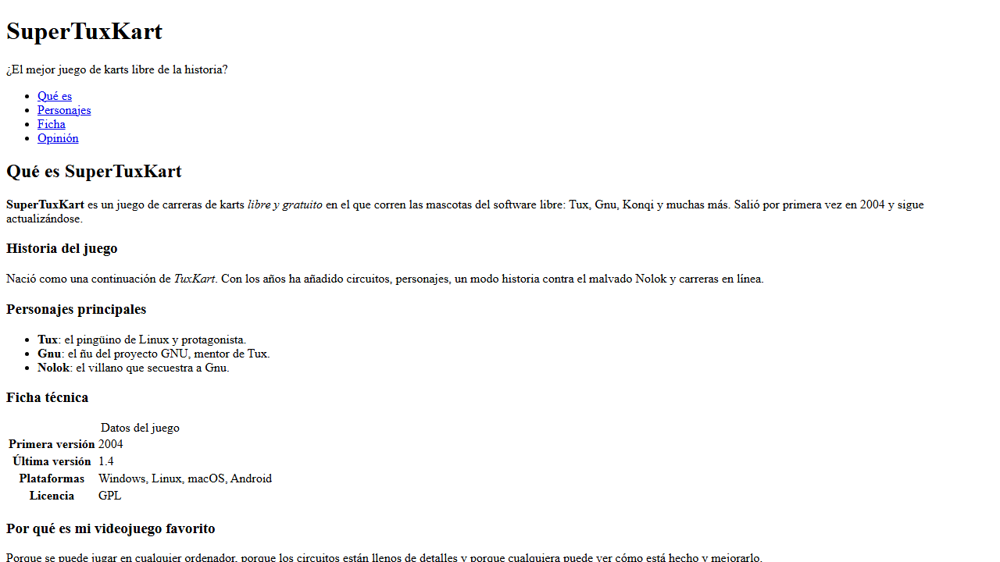
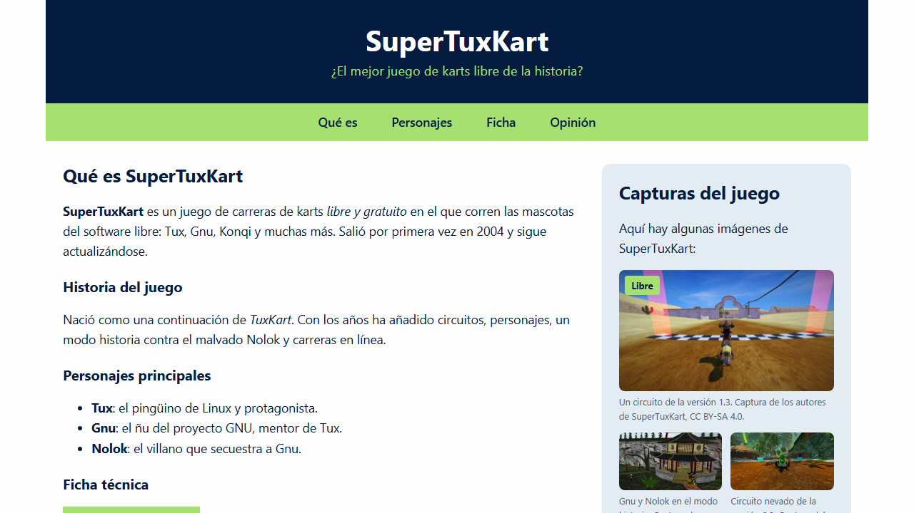
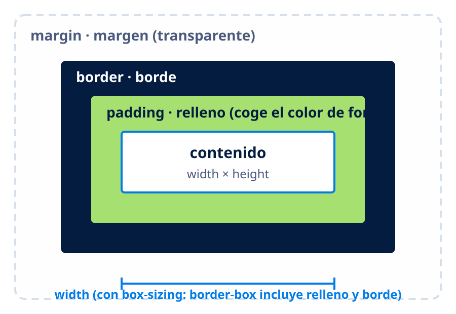
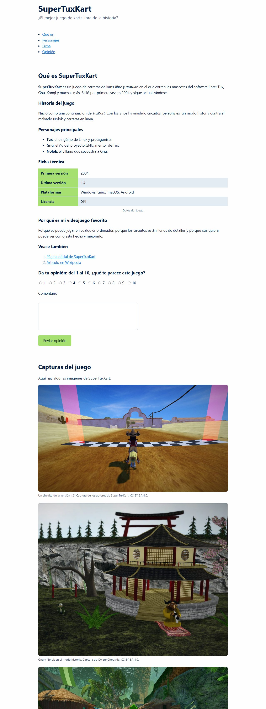
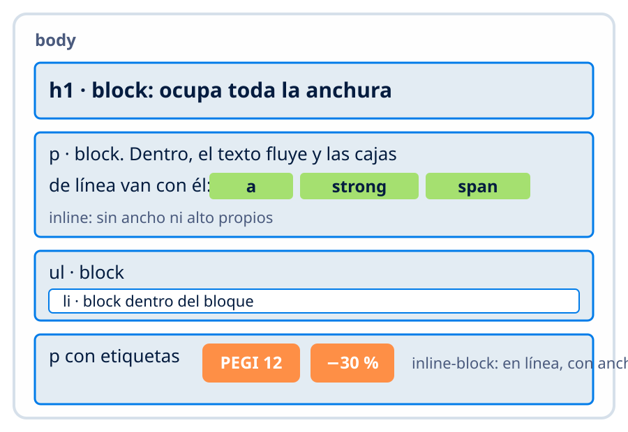
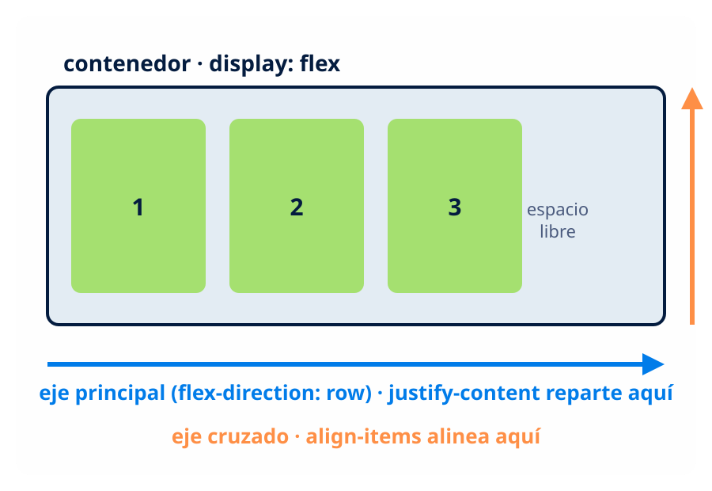
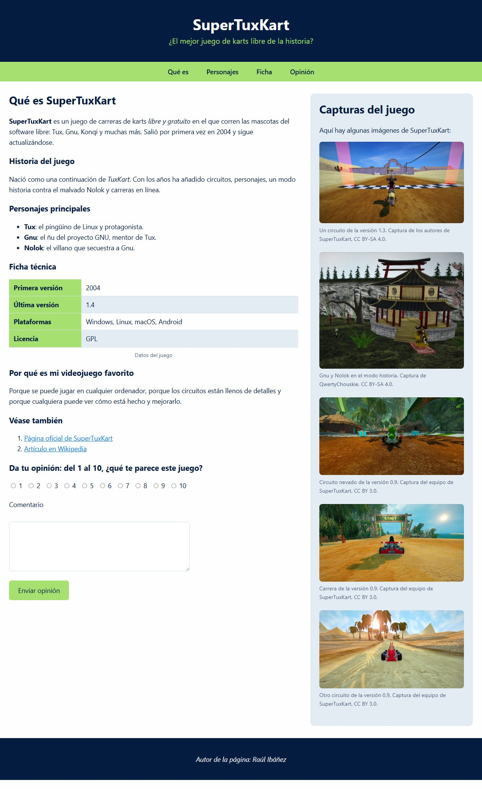
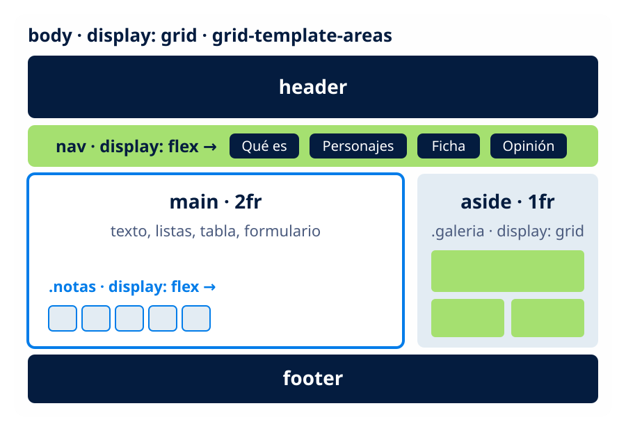
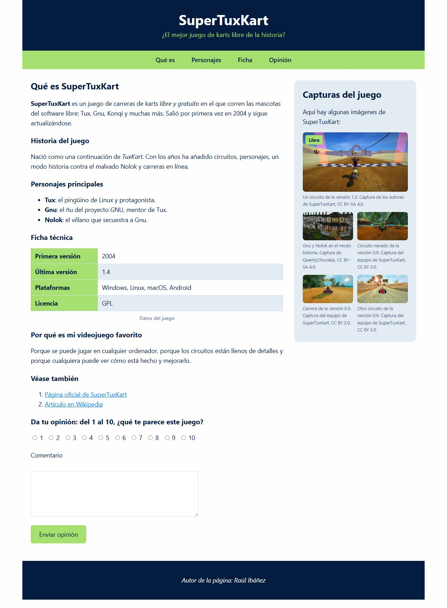
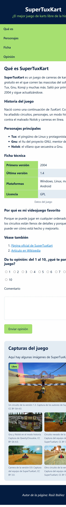

Unidad 2
Contenidos de la unidad
Catorce sesiones, seis de práctica en el ordenador. Al terminar, tu página de la UT1 tendrá una hoja de estilo que la hace verse bien en el ordenador y en el móvil, y estará publicada.
- 2.1Qué es CSS y cómo se escribe: reglas, selectores, colores, texto y cajas
- 2.2PrácticaTu página con estilo, parte 1
- 2.3Colocar cosas: display y flexbox; menús, tablas, formularios e imágenes
- 2.4PrácticaCabecera, menú y columnas
- 2.5Grid, posición y diseño responsive
- 2.6PrácticaPágina final responsive y publicada
- 2.7Examen de teoría y examen práctico «Mi película favorita»
Unidad 2
Qué vas a saber hacer
Dar color, tipografía y espacio a cualquier página
Desde una hoja de estilo externa, sin tocar el HTML.
Elegir el selector que llega justo al elemento que quieres
Y saber qué regla gana cuando hay varias.
Colocar cabecera, menú, columnas y pie
Con flexbox y grid, como se hace hoy.
Hacer que la misma página se vea bien en el móvil
Diseño responsive con media queries.
Leer la hoja de estilo de cualquier web y entender cada regla
En DevTools. Es lo que harás para personalizar un tema de WordPress o de Moodle.
Qué es CSS
Tu página, antes y después. El HTML es el mismo

Antes. Sin CSS, el navegador aplica su estilo por defecto: letra Times New Roman, texto negro sobre fondo blanco, todo en una columna.

Después. Una hoja de estilo de unas 120 líneas: paleta, tipografía, cabecera, menú, dos columnas, galería y versión móvil.

Pregunta a la clase
¿Qué hace esta web que la tuya no hace?
Se abre en clase la web de GTA VI (rockstargames.com/VI) y se hace scroll. Fíjate en lo que se mueve, en lo que aparece y en cuándo cargan las imágenes.
Qué hay detrás
- ●Parallax: el fondo se mueve a distinta velocidad que el texto. Posiciones y transformaciones CSS.
- ●Bloques que aparecen al llegar a ellos: transiciones y animaciones CSS.
- ●Lazy loading: las imágenes cargan cuando hacen falta, no todas al principio.
- ●Una secuencia de imágenes que avanza con el scroll: JavaScript (UT6) cambia lo que CSS muestra.
- ●El HTML de debajo es el mismo que sabes escribir: encabezados, párrafos, imágenes y enlaces.
Qué es CSS
Un poco de historia, sin versiones que memorizar
CSS lo mantiene el W3C, la organización que publica los estándares de la web. La referencia que usaremos es MDN; para saber si algo funciona en todos los navegadores, caniuse.com o la marca «Baseline» de MDN.
«CSS3» aparece en muchos tutoriales y cursos; hoy no designa ninguna versión concreta. Todo lo de esta unidad funciona en cualquier navegador actual.
- 1994Håkon Wium Lie propone CSS en el CERN para separar el aspecto del contenido HTML
- 1996CSS1: texto, colores, fondos, márgenes
- 1998CSS2: posicionamiento y cajas. Muchos tutoriales antiguos se quedan aquí
- desde 2000Se deja de numerar: CSS se desarrolla por módulos, cada uno con su nivel (Flexbox nivel 1, Grid nivel 2, Selectores nivel 4). No existe ni existirá un «CSS4»
- 2015–2017Flexbox y Grid funcionan en todos los navegadores. Ya no hace falta maquetar con float ni con tablas
- hoyVariables, funciones, consultas de contenedor, anidamiento. Lo básico de esta unidad no ha cambiado en años
Qué es CSS
Anatomía de una regla
- —Una regla tiene un selector y, entre llaves, una o varias declaraciones
- —El selector dice a qué elementos afecta la regla
- —Cada declaración es una propiedad, dos puntos, un valor y punto y coma. Una por línea
- —Los comentarios van entre
/* */ - —Los espacios y saltos de línea no importan. Todo en minúsculas
- —Si falta un punto y coma o una llave, todo lo que viene después deja de funcionar y el navegador no avisa
/* Título principal de la página */
h1 {
color: #041c3f;
font-size: 2.5rem;
text-align: center;
}
/* selector { propiedad: valor; } */
p {
line-height: 1.6;
}
Qué es CSS
Tres formas de aplicar CSS, y la que usamos
1 · Hoja externa: la que usamos
<head>
<meta charset="utf-8">
<title>SuperTuxKart</title>
<link rel="stylesheet"
href="estilos.css">
</head>
h1 { color: crimson; }
Un archivo para todo el sitio. Se cambia una vez y cambian todas las páginas.
2 · Interna: para pruebas y CodePen
<head>
<meta charset="utf-8">
<title>SuperTuxKart</title>
<style>
h1 { color: crimson; }
</style>
</head>
Vale para una sola página. En CodePen, la pestaña CSS hace esto por ti.
3 · En línea: no se usa
<body>
<h1 style="color: crimson;">
SuperTuxKart
</h1>
</body>
Mezcla contenido y aspecto, hay que repetirlo en cada etiqueta y gana a todo lo demás. Es lo mismo que hacían los atributos FONT y ALIGN de HTML 4.
Qué es CSS
Tu primera hoja de estilo en cinco pasos
- 1.Crea
estilos.cssen la misma carpeta queindex.html - 2.Escribe el
<link>dentro del<head> - 3.Una regla para
bodycon un color de fondo, y guarda - 4.Recarga. Si no cambia nada, revisa la ruta del
hrefy el nombre del archivo: minúsculas, sin espacios - 5.Abre DevTools, pestaña Estilos, y comprueba que aparece tu archivo
<!DOCTYPE html> <html lang="es"> <head> <meta charset="utf-8"> <title>SuperTuxKart</title> <link rel="stylesheet" href="estilos.css"> </head>
body {
background-color: #e3ecf3;
}
La carpeta del proyecto: index.html, estilos.css e img/. Es la misma que subirás a GitHub al final de la unidad.
Qué es CSS
Verlo en el navegador: DevTools, pestaña Estilos
Selecciona un elemento en Elementos y a la derecha aparecen todas las reglas que le afectan, con el archivo y la línea de cada una.
- —Tachado: esa declaración perdió frente a otra regla
- —Triángulo amarillo: el navegador no entiende esa propiedad o ese valor
- —user agent stylesheet: el estilo por defecto del navegador. Por eso un
h1se ve grande y en negrita aunque no tengas CSS - —Puedes editar en vivo para probar; al recargar se pierde
Figura 2.1. La pestaña Estilos de las DevTools. Abajo del todo está el dibujo del modelo de caja del elemento seleccionado.
Selectores
Selectores básicos: a quién afecta la regla
El selector es la parte de la regla que dice a qué elementos se aplica. Estos son los cinco básicos.
/* de elemento: todos los p */
p { line-height: 1.6; }
/* de clase: los que llevan class="destacado" */
.destacado { background: #a5e070; padding: .5rem; }
/* de id: el único elemento con id="ficha" */
#ficha { border-left: 6px solid #017ce9; padding-left: 1rem; }
/* agrupación: la misma regla para varios */
h1, h2, h3 { color: #041c3f; font-family: sans-serif; }
/* universal: todos los elementos */
* { box-sizing: border-box; }
- —En el HTML:
<p class="destacado">y<h2 id="ficha"> - —La clase se repite; el id es único. Nombres que digan qué es:
.precio, no.rojo
Selectores
Selectores combinados: llegar a un elemento concreto
Los selectores se combinan para afectar solo a los elementos que interesan. Cuanto más concreto es el selector, a menos elementos llega.
/* descendiente (espacio): enlaces dentro de nav, a
cualquier nivel */
nav a {
color: white; background: #041c3f; padding: .3rem .8rem;
}
/* hijo directo (>): solo los li hijos directos de la ul */
ul > li { margin-bottom: .3rem; }
/* elemento con clase (pegados): solo los p destacados */
p.destacado { font-weight: 700; }
/* dos clases encadenadas: el elemento que tiene las dos */
.boton.grande { font-size: 1.4rem; }
/* de atributo: los input de tipo email */
input[type="email"] { border: 2px solid #017ce9; }
- —
nav aafecta a los enlaces del menú y no al enlace del párrafo - —
.boton.grande(pegados) no es.boton .grande(descendiente)
Estilo visual
Colores: cuatro maneras de escribir el mismo
Un mismo color se puede escribir de cuatro formas equivalentes. La hexadecimal es la más habitual.
/* unos 148 nombres */
.nombre { background: crimson; }
/* rojo verde azul, 00 a ff */
.hex { background: #dc143c; }
/* abrevia #ffaa00 */
.hex3 { background: #fa0; }
.rgb { background: rgb(220 20 60); } /* de 0 a 255 */
/* tono, saturación, luz */
.hsl { background: hsl(348 83% 47%); }
/* con transparencia */
.alfa { background: rgb(220 20 60 / 40%); }
/* color es el texto; background-color, el fondo */
body { color: #041c3f; background-color: #fefefe; }
div {
padding: .6rem 1rem; margin: .4rem 0; color: white;
font-weight: 700;
}
- —La escritura con comas,
rgb(220, 20, 60), también vale y la verás en muchos sitios - —En DevTools, clic en el cuadrado de color junto al valor para abrir el selector de color. Paletas hechas: coolors.co, colorhunt.co
Estilo visual
Contraste y tamaño: que el texto se lea
- —Contraste: texto oscuro sobre fondo claro o al revés. La recomendación de accesibilidad (WCAG) es 4,5 a 1 para texto normal, y DevTools lo mide en el selector de color
- —Evita el gris claro sobre blanco y el texto sobre una foto sin una capa oscura debajo
- —Tamaño de lectura en pantalla: 16 px como mínimo. Los títulos, más; la letra pequeña, para pies y notas
- —Una paleta corta: fondo, texto, un acento y una versión clara del acento. Es la de tu maqueta
Se lee
Texto #041c3f sobre #fefefe. Contraste 16 a 1.
No se lee
Texto #b8c2cc sobre #fefefe. Contraste 1,9 a 1.
Se lee
Texto #a5e070 sobre #041c3f. Contraste 10 a 1.
No se lee
Texto blanco sobre #a5e070. Contraste 1,5 a 1.
Estilo visual
Tipografía
Las propiedades del texto. font-family recibe una lista de fuentes, llamada pila: el navegador usa la primera que tenga instalada.
body {
/* pila: la primera que tenga */
font-family: "Segoe UI", Roboto, system-ui, sans-serif;
font-size: 1.1rem;
/* sin unidad: 1,6 veces la letra */
line-height: 1.6;
}
h1 {
font-size: 2.5rem;
font-weight: 800; /* grosor: 400 normal, 700 bold */
letter-spacing: -.02em;
text-align: center; /* lo que hacía P ALIGN */
}
h2 { font-style: italic; text-transform: uppercase; }
a { text-decoration: none; } /* sin subrayado */
small { font-size: .85rem; } /* lo que hacía BIG y SMALL */
code { font-family: monospace; } /* lo que hacía TT */
- —La última de la pila es siempre una genérica:
serif,sans-serif,monospace. Comillas solo si el nombre lleva espacios - —Todo lo que hacían
FONT,ALIGN,BIG,SMALLyTTen HTML 4 está aquí
Estilo visual
Unidades: cuál usar para cada cosa
Tabla 2.1. Regla del curso: rem para texto y espacios, px para detalles, % para anchos. El cero no lleva unidad: margin: 0.
Estilo visual
Fuentes que no están en el ordenador
Con la pila del sistema cada visitante ve la fuente que tenga instalada. Si quieres una concreta, Google Fonts tiene cientos gratuitas: eliges una, copias el <link> al <head> y la usas en font-family, con su pila de reserva.
Aviso. Con el <link>, cada visita descarga la fuente de Google y le envía su IP. En la UE se ha considerado un problema de privacidad, y muchas webs descargan la fuente (Google Fonts lo permite) y la sirven desde su propio servidor con @font-face. En CodePen, el <link>; en tu página publicada, la pila del sistema o la fuente descargada.
<!-- en el head, lo que da Google Fonts -->
<link rel="stylesheet"
href="https://fonts.googleapis.com/css2?family=Nunito
:wght@400;700&display=swap">
<style>
body { font-family: "Nunito", system-ui, sans-serif; }
/* alternativa: fuente descargada, servida desde tu carpeta */
@font-face {
font-family: "Nunito";
src: url("fuentes/nunito.woff2") format("woff2");
}
</style>
Cajas
Todo es una caja
- —Contenido: el texto o la imagen. Su tamaño es
widthyheight - —Relleno,
padding: espacio entre el contenido y el borde. Tiene el mismo color de fondo que el contenido - —Borde,
border: la línea que rodea la caja - —Margen,
margin: separación con las cajas de al lado. Transparente
DevTools dibuja esta caja al pasar el ratón por cualquier elemento, con sus medidas.

Figura 2.2. El modelo de caja. Es lo que DevTools enseña abajo del todo en la pestaña Estilos.
Cajas
margin, padding y border
Las tres partes de la caja alrededor del contenido. Cada una se escribe con un atajo de uno a cuatro valores.
.ficha {
/* arriba y abajo · izquierda y derecha */
padding: 1rem 1.5rem;
/* separación con lo de arriba y abajo */
margin: 1rem 0;
border: 2px solid #041c3f; /* grosor · estilo · color */
border-radius: 12px; /* esquinas */
box-shadow: 0 4px 12px rgb(0 0 0 / 15%);
background: #e3ecf3;
}
.etiqueta {
/* un valor: los cuatro lados iguales */
padding: .25rem .75rem;
border: 2px dashed #017ce9;
border-radius: 999px; /* píldora */
}
/* círculo */
.avatar { width: 80px; height: 80px; border-radius: 50%; }
/* la línea horizontal hr, con el borde que quieras */
hr { border: 0; border-top: 1px solid #d6e0ea; }
- —Cuatro valores van en el sentido del reloj: arriba, derecha, abajo, izquierda
- —Estilos de borde:
solid,dashed,dotted.margin: 0 autocentra una caja con ancho
Cajas
Ancho, alto y el reset del curso
El ancho se controla con max-width; el alto lo pone el contenido. El reset son tres reglas que abren todas las hojas del curso.
/* El reset del curso: siempre al principio de la hoja */
/* el ancho incluye relleno y borde */
* { box-sizing: border-box; }
/* quita el margen que el navegador pone por defecto */
body { margin: 0; }
/* las imágenes nunca desbordan */
img { max-width: 100%; height: auto; }
/* Ancho: max-width, no width */
/* crece hasta ahí y se centra */
main { max-width: 60rem; margin: 0 auto; }
/* Las dos cajas miden 250px de ancho, pero solo una lo
cumple */
.sin {
box-sizing: content-box; width: 250px; padding: 20px;
border: 10px solid #fc565b;
}
.con {
box-sizing: border-box; width: 250px; padding: 20px;
border: 10px solid #0a6e1a;
}
.sin, .con { margin: .5rem 0; background: #e3ecf3; }
- —
heightcasi nunca: el alto lo pone el contenido. Si hace falta,min-height - —Con
max-widthla caja se encoge sola en pantallas estrechas. Es el primer paso del diseño responsive
Cascada
Cascada, especificidad y herencia: quién gana
Gana la regla más específica. Un id pesa más que una clase; una clase más que un elemento. nav a gana a a. Para comparar se puede contar 100 por cada id, 10 por cada clase y 1 por cada elemento, pero las cuentas no se suman: once clases no ganan a un id.
A igual especificidad, gana la última escrita. Por eso el orden de la hoja importa, y la interna y la externa tienen la misma fuerza: decide cuál va después en el <head>.
El estilo en línea gana a la hoja, y !important gana a todo. Por eso no se usan: después no hay manera de corregir esa regla sin otro !important.
Herencia. Lo del texto (color, fuente, tamaño) pasa de body a todo lo de dentro; lo de la caja (borde, margen, fondo) no. Por eso body { font-family } cambia toda la página.
a { color: blue; } /* 1 elemento */
/* 2 elementos: gana a la anterior */
nav a { color: white; }
/* 1 clase: gana a las dos anteriores */
.activo { color: green; }
/* 1 id + 1 elemento: gana a todas */
#menu a { color: red; }
/* igual que la primera, pero después:
gana a la primera, no a las demás */
a { color: orange; }
/* En DevTools verás tachado lo que perdió */
Selectores
Cómo se elige el selector
Quieres una regla que afecte solo al enlace marcado. Lee el HTML desde el elemento marcado hacia fuera: es un a con la clase activo, dentro de un nav.
- ✓
nav .activo: lo alcanza, y solo a él - ✗
nav a: alcanza de más, también el otro enlace del menú - ✗
#activo: no alcanza nada, es una clase, no un id - ✗
a .activo: con espacio busca un descendiente del enlace; no hay
<nav>
<ul>
<li><a href="#que-es">Qué es</a></li>
<li><a href="#ficha" class="activo">Ficha</a></li>
</ul>
</nav>
<p>Lee <a href="#">más</a>.</p>
¿Qué selector lo alcanza?
Cada vez sale un HTML distinto con una o varias líneas marcadas. Elige el selector que llega justo a lo marcado. Comprobar marca en el HTML lo que alcanza tu selector; Pista te dice de qué familia es; Resolver explica qué alcanzaba cada uno.
Tu página con estilo, parte 1
Abre en VS Code la carpeta de tu «Mi videojuego favorito» (si no la conservas, descarga el index.html que entregaste). Crea estilos.css, enlázala y consigue el aspecto de la maqueta 1. Todavía en una columna.
Tu HTML tiene que tener header, nav, main, aside y footer. Si te falta el nav con los cuatro enlaces a las anclas, añádelo: es el único cambio de HTML permitido en la unidad.
Duración
2 sesiones
Modalidad
Individual, en el aula
Entrega
Al final de la unidad, con las partes 2 y 3. Se revisa en la sesión 4
Material
VS Code, navegador, esta presentación. Sin IA
- 1.El reset del curso y la paleta en variables: fondo, texto, acento, acento claro y línea
- 2.Tipografía con pila (una de Google Fonts en los títulos, si quieres) y
maincentrado conmax-width: 60rem - 3.Espaciado de encabezados, párrafos y listas; tabla con bordes unidos y filas cebra; formulario con campos a ancho completo; figuras con pie en pequeño
- 4.Cuaderno, en CodePen: ejercicio 1, la bandera de Laos; ejercicio 2, la tarjeta de un videojuego
Maqueta 1: cómo debe quedar
Una columna centrada, paleta aplicada, tipografía cuidada, tabla con cebra, formulario limpio. Clic en la imagen para verla entera.
La paleta
Puedes cambiarla por la de tu juego si el contraste se lee (4,5 a 1 en el texto).

Figura 2.3. Maqueta 1, primera parte de la página. La captura completa está en Classroom.
Antes de dar por buena una práctica
La hoja pasa el validador CSS sin errores: jigsaw.w3.org/css-validator. Pega el código o sube el archivo.
En DevTools no hay triángulos amarillos: ninguna propiedad ni valor que el navegador no entienda.
Cero atributos style en el HTML. Todo el aspecto está en estilos.css.
Los nombres de clase describen el contenido: .galeria, .notas, no .caja1.
Se ve bien al estrechar la ventana. En la práctica 2.1 basta con que nada desborde; en la 2.3, que la maqueta cambie a una columna.
Colocar cosas
Cajas de bloque y cajas de línea
- —
display: block: ocupa toda la anchura y empieza en línea nueva.p,h1,div,section - —
inline: va dentro del texto y no acepta ancho ni alto.a,strong,span - —
inline-block: en línea, pero con ancho, alto y relleno. Una etiqueta «PEGI 12» - —
none: desaparece del todo.visibility: hiddenlo oculta pero deja el hueco - —
flexygrid: los que colocan a los hijos. Se explican a continuación

Figura 2.4. Cada elemento tiene un display por defecto; con CSS se cambia.
Flexbox
Flexbox: el contenedor coloca a sus hijos
display: flex en el contenedor coloca a sus hijos directos en fila. El contenedor decide la dirección, el reparto y la alineación; los hijos se adaptan.
- —Eje principal: la fila (o la columna).
justify-contentreparte aquí - —Eje cruzado: el otro.
align-itemsalinea aquí - —Para todo lo que va en una dirección: menús, logo a un lado y botones al otro, tarjetas en fila, centrar

Figura 2.5. Contenedor, hijos y los dos ejes. Antes de flexbox (2015) esto se hacía con float y trucos; muchas páginas antiguas siguen así.
Flexbox
Dirección, reparto y alineación
Tres propiedades del contenedor flex deciden en qué dirección van los hijos, cómo se reparte el espacio y cómo se alinean.
.fila {
display: flex;
flex-direction: row; /* row (defecto) o column */
/* eje principal: flex-start, center, space-between,
space-around, space-evenly */
justify-content: space-between;
/* eje cruzado: stretch (defecto), center,
flex-start, flex-end */
align-items: center;
/* hueco entre hijos, sin márgenes */
gap: 1rem;
background: #e3ecf3; padding: 1rem;
border-radius: 12px; margin-bottom: 1rem;
}
.columna {
display: flex; flex-direction: column; gap: .5rem;
}
.caja {
background: #a5e070; padding: 1rem; border-radius: 8px;
font-weight: 700;
}
.alta { padding: 2rem 1rem; }
- —
space-betweenes el que más usarás: logo a la izquierda, menú a la derecha - —Cámbialo en DevTools y mira cómo se recolocan las cajas
Flexbox
Centrar, crecer y saltar de línea
Tres usos más de flexbox: centrar en las dos direcciones, repartir el espacio entre los hijos y dejar que salten de línea.
/* Centrar cualquier cosa en las dos direcciones */
.centro {
display: flex; justify-content: center; align-items: center;
height: 6rem; background: #041c3f; color: white;
}
/* El cuerpo como contenedor flex que salta de línea */
body {
display: flex; flex-wrap: wrap; gap: 0 1rem; margin: 0;
}
header, nav, footer { flex: 0 0 100%; } /* toda la anchura */
/* el doble de espacio… */
main { flex: 2; }
aside { flex: 1; } /* …que el lateral */
/* flex: 0 0 16rem fijaría el lateral, sin crecer ni
encoger */
header, nav, footer {
background: #a5e070; padding: .5rem 1rem;
}
main, aside {
background: #e3ecf3; padding: 1rem; margin: .5rem 0;
}
- —
flex: 1reparte a partes iguales;flex: 2da el doble;flex-wrap: wrapdeja saltar de línea - —Es la maqueta de escritorio de la práctica 2.2. La definitiva, con grid, en la 2.3
Flexbox
El menú de navegación
El menú de la página, con el HTML de la UT1 y cuatro reglas: la lista en fila, sin viñetas ni sangría, y cada enlace como una caja.
/* El HTML es el de la UT1: nav > ul > li > a */
nav { background: #a5e070; }
nav ul {
display: flex; /* los li en fila */
gap: .5rem;
justify-content: center;
list-style: none; /* sin viñetas */
margin: 0;
padding: 0; /* sin la sangría por defecto de la lista */
}
nav a {
display: block; /* toda la caja es clicable */
padding: .75rem 1.25rem;
color: #041c3f;
text-decoration: none;
font-weight: 600;
}
- —Es el patrón de cualquier web, y el que usa el tema de WordPress
- —Los cambios al pasar el ratón se añaden en la siguiente diapositiva
Flexbox
Estados: cuando pasas el ratón, cuando pulsas
Las seudoclases seleccionan un elemento según su estado: con el ratón encima, seleccionado con el teclado, pulsado o ya visitado.
nav ul {
display: flex; gap: .5rem; list-style: none; margin: 0;
padding: 0; background: #a5e070;
}
nav a {
display: block; padding: .75rem 1.25rem; color: #041c3f;
text-decoration: none; font-weight: 600;
/* el cambio, suave */
transition: background-color .2s, color .2s;
}
/* ratón encima */
nav a:hover { background: #041c3f; color: white; }
/* llegando con Tab */
nav a:focus { outline: 3px solid #017ce9; }
/* mientras pulsas */
nav a:active { background: #017ce9; }
/* ya visitado */
a:visited { color: inherit; }
.boton {
display: inline-block; padding: .6rem 1.2rem;
margin-top: 1rem; background: #017ce9; color: white;
border-radius: 8px; cursor: pointer;
transition: transform .1s;
}
.boton:hover { transform: scale(1.05); }
- —Las seudoclases van pegadas al selector:
a:hover. Si usas las cuatro, en este orden: link, visited, hover, active - —No quites el
outlinedel:focussin poner otro: es lo que ve quien navega con teclado
Componentes
Listas con estilo
Las viñetas, la numeración y la sangría de una lista se cambian con las propiedades list-style.
/* disc, circle, square, none */
ul { list-style-type: square; }
/* decimal, lower-alpha, upper-roman… */
ol { list-style-type: lower-alpha; }
li { margin-bottom: .4rem; }
/* la viñeta, de color */
li::marker { color: #017ce9; }
/* Los navegadores ponen 40px de sangría: por eso los menús
llevan padding: 0 */
ul.dentro { list-style-position: inside; padding-left: 0; }
/* Lista de definiciones: el glosario */
dt { font-weight: 700; color: #041c3f; margin-top: .6rem; }
dd { margin-left: 1.5rem; color: #4a5a7d; }
- —El atributo
typede las listas de HTML 4 es hoylist-style-type
Componentes
Tablas: lo que hacían los atributos, en CSS
Cada atributo de tabla de HTML 4 tiene hoy su propiedad CSS. Se aplican a la tabla, a las celdas o a las filas.
/* bordes unidos (CELLSPACING 0) */
table { border-collapse: collapse; width: 100%; }
caption {
caption-side: bottom; color: #4a5a7d; font-size: .9rem;
padding: .5rem;
}
th, td {
padding: .5rem .75rem; /* CELLPADDING */
text-align: left; /* ALIGN */
vertical-align: middle; /* VALIGN */
/* BORDER, pero solo abajo */
border-bottom: 1px solid #d6e0ea;
}
/* WIDTH */
th { background: #a5e070; width: 12rem; }
/* filas cebra */
tbody tr:nth-child(even) { background: #e3ecf3; }
tbody tr:hover { background: #f3f7c9; }
/* Si no caben en el móvil: un div.tabla alrededor */
.tabla { overflow-x: auto; }
Componentes
Formularios
Los campos de formulario tienen un aspecto distinto en cada navegador. Con CSS se unifican: misma fuente, mismo ancho, mismo borde.
label { display: block; margin-bottom: .25rem; }
input, textarea, select {
/* los campos no heredan la fuente si no se lo dices */
font: inherit;
width: 100%;
padding: .5rem;
border: 1px solid #d6e0ea;
border-radius: 6px;
}
/* cámbialo, no lo quites */
input:focus, textarea:focus { outline: 2px solid #a5e070; }
button {
font: inherit; background: #a5e070; color: #041c3f;
border: none; padding: .75rem 1.5rem;
border-radius: 6px; cursor: pointer;
}
button:hover { background: #041c3f; color: white; }
/* los radios en fila */
.notas { display: flex; gap: .75rem; flex-wrap: wrap; }
.notas label { display: inline; }
.notas input { width: auto; }
- —Es el formulario de valoración de tu página. El selector de atributo
input[type="email"]sirve para tratar un tipo de campo distinto
Componentes
Imágenes y figuras
Dos objetivos: que ninguna imagen desborde su caja y que todas las capturas de una galería tengan la misma forma.
/* del reset: nunca desbordan */
img { max-width: 100%; height: auto; }
figure { margin: 0 0 1rem; }
figure img { border-radius: 8px; display: block; }
figcaption {
font-size: .85rem; color: #4a5a7d; margin-top: .3rem;
}
/* Todas las capturas con la misma forma, sin deformarse */
.galeria img {
width: 100%;
aspect-ratio: 16 / 9;
object-fit: cover;
}
/* El único uso de float que queda: texto alrededor */
.flotante {
float: left; width: 8rem; margin: 0 1rem .5rem 0;
}
/* WIDTH, HEIGHT, ALIGN y BORDER de  son hoy
width, height, float y border */
son hoy
width, height, float y border */
- —Dos capturas con formas distintas se ven iguales gracias a
aspect-ratioyobject-fit: cover
Repaso
Cómo se completa una regla
Aparece una regla con un hueco. Lee el selector y las otras declaraciones: dicen para qué es la regla. Escribe solo lo que falta, una propiedad o un valor.
- 1.El selector es
nav uly hay ungap: es el menú, en fila - 2.Lo que pone a los hijos en fila es
display: flex - ✓Se escribe
flex, sin punto y coma
nav ul {
display: ___;
gap: 1rem;
list-style: none;
}
/* respuesta: flex */
Completa la regla que falta
Cada vez sale una regla distinta con un hueco. Comprobar corrige, Pista te dice para qué es, Resolver lo rellena y Otro ejercicio cambia de regla. Cuenta los aciertos seguidos sin pista.
Cabecera, menú y columnas
Sobre tu página de la práctica 2.1, consigue la maqueta 2 de escritorio: cabecera con franja de color, menú horizontal, dos columnas y pie.
Las columnas se hacen como en la diapositiva 32: el body es un contenedor flex que salta de línea; cabecera, menú y pie ocupan toda la anchura y main y aside comparten una línea en proporción 2 a 1. Sin tocar el HTML.
Duración
2 sesiones
Modalidad
Individual, en el aula
Entrega
Al final de la unidad. Se revisa en la sesión 8
Material
VS Code, navegador, esta presentación. Sin IA
- 1.
headercon fondo de color de texto, título en blanco y subtítulo en acento;footerigual, con el autor - 2.
navcon los cuatro enlaces en fila con flexbox,:hovercon transición, y las anclas funcionando - 3.
mainyasideen dos columnas,flex: 2yflex: 1; el lateral con fondo claro y las capturas - 4.Tabla cebra con
:hovery formulario como en las diapositivas 37 y 38 - 5.Cuaderno: ejercicio 3, un menú de navegación; ejercicio 4, el horario y el formulario de la UT1 con estilo
Maqueta 2: escritorio
A 1280 px de ancho. Clic en la imagen para verla entera.
- —Cabecera y pie con fondo
--texto; menú con fondo--acento - —
mainyasideen proporción 2 a 1, con un hueco de 2rem - —El lateral con fondo
--acento-claro, esquinas redondeadas y las capturas una debajo de otra (la rejilla llega en la 2.3)

Figura 2.6. Maqueta 2, segunda parte de la página.
Grid
Grid: filas y columnas a la vez
display: grid en el contenedor define una rejilla; los hijos se colocan en sus celdas.
- —Flexbox: una dirección. Un menú, una fila de tarjetas, centrar
- —Grid: dos direcciones. La página entera, una galería
- —Regla práctica: grid reparte la página; flex ordena lo que hay dentro de cada zona

Figura 2.7. La maqueta final de tu página: grid para las zonas, flex dentro del menú y del formulario, grid otra vez para la galería.
Grid
Columnas y huecos
grid-template-columns dice cuántas columnas tiene la rejilla y de qué ancho es cada una.
/* tres iguales: fr es «fracción» */
.tres { grid-template-columns: 1fr 1fr 1fr; }
/* lo mismo, abreviado */
.rep { grid-template-columns: repeat(3, 1fr); }
/* lateral fijo y el resto */
.lado { grid-template-columns: 12rem 1fr; }
/* tantas como quepan: responsive sin media query */
.auto {
grid-template-columns: repeat(auto-fit, minmax(9rem, 1fr));
}
.galeria { display: grid; gap: .5rem; margin-bottom: .8rem; }
.galeria div {
background: #a5e070; padding: .6rem; border-radius: 6px;
text-align: center;
}
- —
gapfunciona igual que en flexbox - —Estrecha la ventana del resultado: la última rejilla cambia sola de columnas
Grid
La página entera con áreas
Con grid-template-areas se dibuja la maqueta de la página con el nombre de cada zona.
body {
display: grid;
grid-template-areas: /* el dibujo de la página */
"header header"
"nav nav"
"main aside"
"footer footer";
grid-template-columns: 2fr 1fr;
gap: 1rem;
margin: 0;
}
header { grid-area: header; }
nav { grid-area: nav; }
main { grid-area: main; }
aside { grid-area: aside; }
footer { grid-area: footer; }
header, nav, footer { background: #a5e070; padding: .6rem; }
main, aside {
background: #e3ecf3; padding: .6rem; min-height: 5rem;
}
- —Cambiar la maqueta es cambiar las comillas. En móvil bastará con ponerlas en una columna
- —Sustituye a las columnas hechas con
floatyclearde las páginas antiguas
Grid
Ocupar varias celdas: la galería
Un elemento puede ocupar varias celdas de la rejilla, en horizontal o en vertical.
.galeria {
display: grid;
grid-template-columns: repeat(2, 1fr);
gap: .5rem;
}
.galeria img {
width: 100%; height: 100%; /* llena la celda… */
object-fit: cover; /* …sin deformarse */
aspect-ratio: 16 / 9;
border-radius: 6px; display: block;
}
.destacada { grid-column: span 2; } /* ocupa dos columnas */
/* también: grid-column: 1 / 3; o grid-row: span 2 */
- —
span 2cuenta celdas;1 / 3cuenta líneas de la rejilla (de la 1 a la 3) - —Es la galería de la práctica 2.3. Capturas: autores de SuperTuxKart, CC BY-SA 4.0 y CC BY 3.0
Posición
position: colocar una caja fuera de su sitio
position cambia el sitio de una caja respecto a su posición normal en la página.
/* static: lo normal.
relative: se desplaza desde su sitio y deja el hueco;
sobre todo sirve de referencia para un hijo absolute */
figure { position: relative; margin: 0; width: 16rem; }
.etiqueta {
position: absolute; /* sale del flujo; se coloca respecto
al ancestro más cercano posicionado */
top: .5rem; left: .5rem;
background: #a5e070; padding: .2rem .6rem; border-radius: 4px;
}
/* sticky: normal hasta que llega al borde; ahí se queda */
nav { position: sticky; top: 0; z-index: 10;
background: #a5e070; padding: .5rem; }
/* fixed: respecto a la ventana; no se mueve con el scroll */
.subir { position: fixed; right: .5rem; bottom: .5rem;
background: #041c3f; color: white;
padding: .4rem .8rem; border-radius: 999px; }
- —
top,right,bottom,leftdicen dónde;z-index, quién queda encima - —Dos usos en tu página: la etiqueta sobre una captura y el menú que se queda arriba
54 %
De las visitas a webs en España se hacen desde el móvil
Una página que solo se ve bien en el ordenador del aula no le sirve a más de la mitad de la gente que la abre. Por eso la maqueta final tiene dos versiones.
44 %
Desde el ordenador en España. Tableta, 1 %
49 / 49
En el mundo, móvil y ordenador están a la par
Fuente: StatCounter, Platform Market Share, España y mundo, agosto de 2026, gs.statcounter.com. Consultado el 12 de septiembre de 2026.
Responsive
Diseño responsive en cinco pasos
- 1.La
meta viewporten elhead. Ya está desde la UT1: sin ella el móvil simula una pantalla de 980 px y lo encoge todo - 2.Anchos en
%,remymax-width, nunca en píxeles fijos - 3.Imágenes fluidas:
max-width: 100%(del reset) - 4.Media queries que cambian la colocación cuando la pantalla es estrecha o ancha
- 5.Probar en DevTools con el modo dispositivo y en tu móvil con la URL de GitHub Pages
Móvil primero: la hoja se escribe para la pantalla estrecha y las media queries añaden columnas al crecer.
<head>
<meta charset="utf-8">
<meta name="viewport"
content="width=device-width, initial-scale=1">
<title>SuperTuxKart</title>
<link rel="stylesheet" href="estilos.css">
</head>
Responsive
Media queries: la misma hoja, dos maquetas
Una media query aplica sus reglas solo cuando se cumple una condición, por ejemplo un ancho mínimo de pantalla.
/* Base: móvil, una columna, menú apilado */
body {
display: grid; gap: .5rem; margin: 0;
grid-template-areas: "header" "nav" "main" "aside" "footer";
}
nav ul { display: flex; flex-direction: column;
list-style: none; margin: 0; padding: 0; }
/* A partir de 48rem (768px): dos columnas, menú en fila */
@media (min-width: 48rem) {
body {
grid-template-areas:
"header header" "nav nav" "main aside" "footer footer";
grid-template-columns: 2fr 1fr;
}
nav ul { flex-direction: row; gap: .5rem; }
}
header { grid-area: header; } nav { grid-area: nav; }
main { grid-area: main; } aside { grid-area: aside; }
footer { grid-area: footer; }
header, nav, footer { background: #a5e070; padding: .5rem; }
main, aside {
background: #e3ecf3; padding: .5rem; min-height: 4rem;
}
- —Puntos de corte habituales: 48rem (tableta) y 64rem (escritorio). No se memorizan: se ponen donde el diseño se rompe.
max-widthpara el caso contrario
Responsive
Verlo como en el móvil: DevTools, modo dispositivo
En DevTools, el icono de móvil y tableta (o Ctrl+Mayús+M) muestra la página al ancho de un teléfono. Arriba eliges el dispositivo o escribes el ancho a mano.
- —375 px es el ancho habitual de un móvil; 768, de una tableta
- —Si aparece una barra de desplazamiento horizontal, algo desborda: busca el ancho fijo
- —Es la captura que entregas con la práctica 2.3
Figura 2.8. El modo dispositivo de las DevTools.
Organizar la hoja
Variables: la paleta en un solo sitio
Una variable guarda un valor con nombre; se declara en :root y se usa con var().
/* la raíz: valen en toda la página */
:root {
--fondo: #fefefe;
--texto: #041c3f;
--acento: #a5e070;
--acento-claro: #e3ecf3;
--linea: #d6e0ea;
}
body {
background: var(--fondo); color: var(--texto);
font-family: sans-serif;
}
header {
background: var(--texto); color: var(--fondo);
padding: 1rem;
}
nav { background: var(--acento); padding: .5rem 1rem; }
th { background: var(--acento); }
td, th {
padding: .4rem; border-bottom: 1px solid var(--linea);
}
aside { background: var(--acento-claro); padding: 1rem; }
/* Cambiar la paleta entera es cambiar cinco líneas */
- —Prueba en DevTools a cambiar
--acentoen:root: cambia todo a la vez - —Es lo que hace un tema de WordPress con sus «estilos globales»
Organizar la hoja
Cómo se organiza una hoja de estilo
/* 1. Reset del curso */
* {
box-sizing: border-box; } body { margin: 0;
} img { max-width: 100%; height: auto;
}
/* 2. Variables */
:root {
--fondo: #fefefe; --texto: #041c3f; --acento: #a5e070; …;
}
/* 3. Base: body, encabezados, enlaces */
body { … } h1, h2, h3 { … } a { … }
/* 4. Zonas: header, nav, main, aside, footer */
/* 5. Componentes: tabla, formulario, galería, tarjeta */
/* 6. Media queries, al final */
@media (min-width: 48rem) { … }
- —Comentarios de sección: la hoja se lee de arriba abajo como un índice
- —Nombres de clase que describan el contenido, en minúsculas y con guiones:
.acento-claro,.galeria - —Sin
!important, sinstyleen línea, sin ids para dar estilo: los ids son para las anclas - —Antes de entregar, el validador CSS y la checklist
Organizar la hoja
Lo que verás en páginas antiguas y no debes escribir
Tabla 2.2. Funciona todavía, pero es de antes de flexbox y grid (2015). Cuando lo veas en una página o en un tutorial antiguo, ya sabes qué es y por qué no lo copias.
Fuera de esta unidad
Frameworks y la IA
Frameworks CSS: Bootstrap (2011, clases hechas como .btn y .row) y Tailwind (clases de utilidad: p-4 flex) dan clases ya escritas para no redactar todo el CSS a mano. Aquí no se usan: el objetivo es entender el CSS que luego modificarás en un tema de WordPress, que ya incluye el suyo.
La IA: los asistentes de código escriben CSS a partir de una descripción o de la imagen de una maqueta. En clase se hace una demostración: se le pide la hoja de estilo de la maqueta 3 y se revisa con la checklist. Para pedir bien y para corregir lo que devuelve hay que saber lo de esta unidad. En la unidad, no permitida.
Figura 2.9. Lo que se revisa: qué ha hecho bien, qué nombres pone, si usa !important, si se adapta bien al móvil.
Repaso
Cómo se encuentra el error en una hoja
El navegador no avisa: descarta lo que no entiende y sigue. Por eso se busca en orden.
- 1.Llaves y puntos y coma: ¿cierra cada regla?, ¿acaba cada declaración?
- 2.El selector: ¿lleva el punto la clase, la almohadilla el id, va pegada la seudoclase?
- 3.La propiedad y el valor: ¿está bien escrita?, ¿tiene unidad?, ¿el color tiene 3 o 6 dígitos?
- ✓En el ejemplo, la línea 2 no acaba en punto y coma: el navegador lee «#041c3f font-size: 2rem» como un solo valor y pierde las dos
h1 {
color: #041c3f
font-size: 2rem;
}
/* línea 2: falta el punto y coma */
Encuentra el error
Cada fragmento tiene un error. Pulsa la línea donde está y elige de qué tipo es. Pista te marca la línea; Resolver lo explica.
Los errores que más se repiten en las prácticas: el punto y coma que falta, la clase sin punto, el valor sin unidad y el justify-content puesto en el hijo en vez de en el contenedor.
Página final: responsive y publicada
Pasa la maqueta de tu página a grid-template-areas, con la versión de una columna como base y la de escritorio en una media query. Publica y comprueba en tu móvil.
Es la entrega de toda la unidad: la página con sus tres partes, la captura del modo dispositivo y el índice del cuaderno.
Duración
2 sesiones
Modalidad
Individual, en el aula
Entrega en Classroom
URL de la página, captura del modo dispositivo y URL del índice del cuaderno
Material
VS Code, navegador, GitHub, CodePen. Sin IA
- 1.Base de una columna con áreas; a partir de 48rem, dos columnas. Menú apilado en móvil y en fila en escritorio,
stickyarriba - 2.Galería de capturas con grid: al menos tres más con crédito,
object-fity una destacada con etiqueta - 3.Paleta en variables; hoja organizada como en la diapositiva 55 y validada; nada desborda a 375 px
- 4.Sube
index.html,estilos.csseimg/a tu repositorio y abre la URL en el móvil - 5.Cuaderno: ejercicio 5, la rejilla de personajes responsive, y el pen índice con los cinco enlaces
Maqueta 3: escritorio y móvil

Figura 2.10. A 1280 px: dos columnas, menú en fila, galería con la captura destacada.

Figura 2.11. A 375 px: una columna, menú apilado, nada desborda. Clic para verla entera.
Subir la versión final a GitHub Pages
- 1.Abre tu repositorio
tuusuario.github.io - 2.Add file, Upload files, y arrastra
index.html,estilos.cssy la carpetaimg - 3.Commit changes. Espera un minuto
- 4.Abre la URL en tu móvil. Si la hoja no carga: mayúsculas en el nombre o ruta del
hrefdistinta de la del archivo. En el servidor,Estilos.cssyestilos.cssson archivos distintos
Figura 2.12. Subir archivos desde la web de GitHub. Es lo mismo que hiciste en la UT1 con un solo archivo.
Repaso
Cómo se empareja
A la izquierda, seis propiedades o valores; a la derecha, seis efectos desordenados. Para cada uno, elige en el desplegable lo que hace.
gap
Espacio entre los hijos de un flex o de un grid, sin márgenes
position: sticky
Se queda pegado al llegar al borde de la ventana
Empareja cada propiedad con su efecto
Cuatro juegos: caja y texto; flexbox y grid; responsive, estados y posición; selectores. Comprobar corrige las seis, Pista resuelve una, Otro ejercicio cambia de juego. Es el repaso de toda la unidad antes del examen.
Examen de teoría
Test de opción múltiple, toda la sesión, sin apuntes ni IA. La mitad de las preguntas llevan un fragmento de código o una captura: «¿qué regla produce esto?», «¿dónde está el error?».
Para prepararlo: los tres quiz, los cuatro interactivos y las diapositivas de código de esta presentación.
Qué entra
- 2.1Qué es CSS, formas de aplicarlo, selectores, colores, tipografía, unidades, modelo de caja, cascada y herencia
- 2.3Display, flexbox, el menú, estados, listas, tablas, formularios e imágenes
- 2.5Grid, áreas, position, responsive y media queries, variables, organización de la hoja, lo que ya no se escribe
Mi película favorita
Recibes un index.html terminado sobre una película, con la misma estructura que tu página, y una maqueta de escritorio y otra de móvil con su paleta. Escribe estilos.css para que se parezca lo más posible. No se toca el HTML.
Reglas: VS Code o CodePen en modo incógnito. Sin IA, sin buscar código ni referencias. Sí esta presentación. Preguntar a un compañero es copiar.
Duración
1 sesión, 50 minutos
Modalidad
Individual, en el aula
Entrega
estilos.css en Classroom al acabar
Material
VS Code o CodePen y esta presentación. Sin IA
Se valora: hoja enlazada y válida, paleta y tipografía, cabecera y menú con flexbox y :hover, dos columnas con grid, tabla y formulario, y la media query que lo apila en móvil.
La maqueta del examen
Figura 2.13. La maqueta se proyecta durante el examen y está en Classroom a tamaño completo.
Unidad 2
Resumen de la unidad
CSS dice cómo se ve. Va en una hoja externa, con reglas de selector, propiedad y valor, enlazada desde el head.
El selector elige (elemento, clase, id, descendiente) y la especificidad decide quién gana; el texto se hereda, la caja no.
Todo es una caja con relleno, borde y margen; box-sizing la hace predecible; rem para texto y espacios, max-width para anchos.
Flexbox coloca en una dirección, grid en dos con áreas, y position coloca cajas fuera del flujo: sticky para el menú, absolute para una etiqueta.
Responsive es viewport, unidades relativas, imágenes fluidas y media queries: una hoja, dos maquetas.
DevTools enseña cada regla y el validador avisa de los errores. La hoja se organiza en orden: reset, variables, base, zonas, componentes, media queries.
Para ampliar
Recursos y documentación
Cuando dudes de una propiedad, la respuesta está en MDN. Cuando dudes de si tu hoja está bien, en el validador y en DevTools.
Enlaces consultados el 12 de septiembre de 2026.
- CSSMDN Web Docs, referencia de CSS en español: developer.mozilla.org/es/docs/Web/CSS. Guías de flexbox y de grid en la misma web.
- ValidadorValidador de CSS del W3C: jigsaw.w3.org/css-validator
- Compatibilidad¿Funciona en todos los navegadores? caniuse.com y la marca «Baseline» de MDN.
- Colores y fuentesPaletas: coolors.co, colorhunt.co. Fuentes: fonts.google.com.
- PublicarSubir archivos a un repositorio desde la web de GitHub: docs.github.com, «Adding a file to a repository».
- DatosStatCounter, cuota de móvil y escritorio, agosto de 2026.
- EjemploLa página de SuperTuxKart con su hoja de estilo de referencia: se publica en Classroom después del examen práctico.
- NormativaCurrículo del ciclo de Sistemas Microinformáticos y Redes en Castilla y León, módulo 0228. BOCyL n.º 173, 9 de septiembre de 2009.